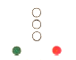
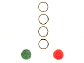
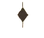
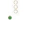
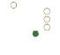
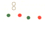
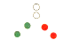
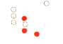
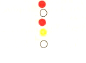

| 101. Кой кораб носи тези светлини?:  |
|
Кораб, тласкан напред, не е свързан с тласкача твърдо в едно цяло Кораб, влачен на борд Влачен кораб, или частично потопен обект Кораб, по дълъг от 50м. влачи друг кораб |
| документ регламентиращ правилния отговор: COLREG (rule24/a) |
| 102. Кой кораб носи тези светлини?:  |
|
Кораб, по- дълъг от 50м., влачи друг кораб, дължина на влекалото по-голяма от 200м Кораб, по къс от 50м. влачи друг кораб Влачен кораб, или частично потопен обект, широк повече от 25м Кораб, влачен на борд |
| документ регламентиращ правилния отговор: COLREG (rule24/a) |
| 103. Кой кораб носи този знак през деня?:  |
|
Кораб, тласкан напред, не е свързан с тласкача твърдо в едно цяло Влачен кораб, или частично потопен обект Влачещ кораб, дължината на влекалото е повече от 200м Влачещ кораб, дължината на влекалото е по-малка от 200м |
| документ регламентиращ правилния отговор: COLREG (rule24/a) |
| 104. Кой кораб носи тези светлини?:  |
|
Кораб, по- дълъг от 50м., влачи друг кораб, дължина на влекалото по-голяма от 200м Влачен кораб, дължината на влекалото е повече от 200м Кораб, по-къс от 50м. влачи друг кораб, движи се надясно Кораб, тласкан напред |
| документ регламентиращ правилния отговор: COLREG (rule24/a) |
| 105. Кой кораб носи тези светлини?:  |
|
Кораб, по- дълъг от 50м., влачи друг кораб, дължина на влекалото по-голя-ма от 200м.,движи се на дясно Кораб, по- къс от 50м. влачи друг кораб, движи се надясно Кораб, по- къс от 50м. влачи друг кораб, движи се на ляво Влачещ кораб, дължината на влекалото е по-малка от 200м |
| документ регламентиращ правилния отговор: COLREG (rule24/a/d) |
| 106. Кой кораб носи тези светлини?: |
|
Кораб, по-къс от 50м. влачи друг кораб, движи се на дясно Кораб, тласкан напред Влачещ кораб, дължината на влекалото е по-голяма от 200м Кораб, по-къс от 50м. влачи друг кораб, движи се на ляво |
| документ регламентиращ правилния отговор: COLREG (rule24/a/e) |
| 107. Кой кораб носи тези светлини?:  |
|
Кораб, буксиращ друг кораб на борд, движи се на дясно Кораб, буксиращ друг кораб на борд, движи се на ляво Кораб, буксиращ друг кораб на борд, идва срещу нас Кораб, тласка напред |
| документ регламентиращ правилния отговор: GOLREG (rule24/c/f/II) |
| 108. Кой кораб носи тези светлини?:  |
|
Кораб, по-къс от 50м.тласка друг кораб, движи се на дясно Кораб, буксиращ друг кораб на борд, идва срещу нас Кораб, по-къс от 50м.тласка друг кораб, движи се срещу нас Кораб, тласкан напред |
| документ регламентиращ правилния отговор: GOLREG (rule24/c/d/f/I) |
| 109. Кой кораб носи тези светлини?:  |
|
Koраб, по-дълъг от 50м., буксира друг кораб и е ограничен във възможността си да маневрира, влекалото е по- дълго от 200м Кораб, по-къс от 50м.,влачи кораб и е ограничен във възможността си да маневрира Влачещ кораб, дължината на влекалото е по-голяма от 200м, влачи кораб ограничен от своето Влачещ кораб, дължината на влекалото е по-голяма от 200м, влачи кораб без управление |
| документ регламентиращ правилния отговор: GOLREG (rule24/a/27/b/c) |
| 110. Кой кораб носи тези светлини?  |
|
Риболовен кораб, вижда се кърмовата му част Пилотски кораб, вижда се кърмовата му част Кораб, зает с влачене и е ограничен в способността си да маневрира Кораб, ограничен от своето газене |
| документ регламентиращ правилния отговор: GOLREG (rule24/a/27/b/c) |